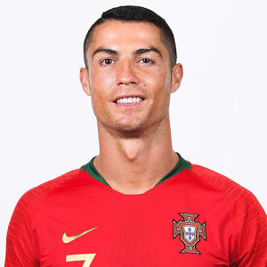

Cristiano Ronaldo
Cristiano Ronaldo is a professional soccer player who has set records while playing for the
Manchester United, Real Madrid and Juventus clubs, as well as the Portuguese national team.
In the 2004 FA Cup final, Ronaldo scored Manchester's first three goals and helped them capture the championship.
He set a franchise record for goals scored in 2008, before Real Madrid paid
a record $131 million for his services the following year.
Among his many accomplishments, he has won a record-tying five Ballon d'Or awards for player of the year,
and led Portugal to an emotional victory in the 2016 European Championship. In July 2018,
Ronaldo embarked on a new phase of his career by signing with Italian Serie A club Juventus.

Early Life
Ronaldo was born on February 5, 1985, in Funchal, Madeira, Portugal, a small island off the western coast
of the country. Ronaldo is the youngest of four children born to Maria Dolores dos Santos and José Dinis Aveiro.
He was named after Ronald Reagan, one of his father's favorite actors.
Ronaldo grew up in a largely working class neighborhood in a small tin-roofed home that overlooked the ocean.
Ronaldo was introduced to the game of soccer through his dad, who worked as an equipment manager at a club.
His early life was shaped by hardship, as his father often drank too much. To help keep the children fed and
maintain some financial stability, Ronaldo's mother worked as a cook and cleaning person.
In 2005, when Ronaldo was playing for Manchester United, his father died from alcohol-related kidney problems;
in 2007, his mother struggled with breast cancer. The former was especially
hard for Ronaldo since he and his dad had been close.
Soccer Career
Manchester United
In 2001, when Ronaldo was just 16 years old, Manchester United paid more than £12 million to sign him —
a record fee for a player of his age. Ronaldo had turned heads with a mesmerizing performance with Portugal
against Manchester, wowing even his opponents with his footwork and deft skill. He made such an impression that
a number of United players asked their manager to try and sign the young player, which the team soon did.
Ronaldo did not disappoint the soccer world: He showed his promise early on in the 2004 FA Cup final, scoring the
team's first three goals and helping them capture the championship. In 2007, Ronaldo signed a five-year.
A year later, Ronaldo again justified his high salary when he put together one of the club's finest seasons
in history, setting a franchise record for goals scored (42), and earning himself the FIFA World Player of the Year
honor for 2008. In all, Ronaldo helped steer Manchester United to three premier league titles.
Real Madrid
In 2009, the Spanish soccer club Real Madrid agreed to pay Manchester United a record $131 million for the chance
to sign Ronaldo. Ronaldo’s commitment to Manchester United had come under constant question,
and speculation swirled that he wanted to play elsewhere, so nobody was all that surprised to see Ronaldo leave.
"I know that they are going to demand a lot of me to be successful at the club and I know that I'm going
to have much more pressure than at Manchester United because I was there for many years," Ronaldo told reporters.
"But it means a new challenge and is going to help me be the best footballer."
Ronaldo went on to compile an impressive list of individual honors and team trophies.
In December 2016, he won his fourth Ballon d'Or award as the sport's player of the year,
beating out FC Barcelona's Lionel Messi. Ronaldo’s 2016 wins included the European Championship,
Champions League and Club World Cup, plus individual awards from UEFA and France Football magazine.
The following year, he claimed a fifth Ballon d'Or to tie the mark held by his longtime rival, Messi.
Juventus
After dropping hints that his time with Real was coming to an end, Ronaldo confirmed the rumors in July 2018
by signing with Italian Serie A club Juventus, which paid a $140 million transfer fee to his old Spanish club.
By most measures, Ronaldo's debut season with Juventus was a successful one. He scored 10 times
in his first 14 games, and headed home the lone goal in a win over AC Milan for the Supercoppa Italiana trophy.
After leading his club to its eighth consecutive Serie A title, he was named the league's MVP in May 2019.
Return to Manchester United
On August 27, 2021, it was announced that Ronaldo would return to Manchester United.
Ronaldo`s Quotes
- “Many people look at me and think they know me, but they don't at all.”
- “I want to win all the trophies possible!”
- “I don't like to do things by halves. It has to be done well.”
- “Either you like me or not. There is nothing in between.”